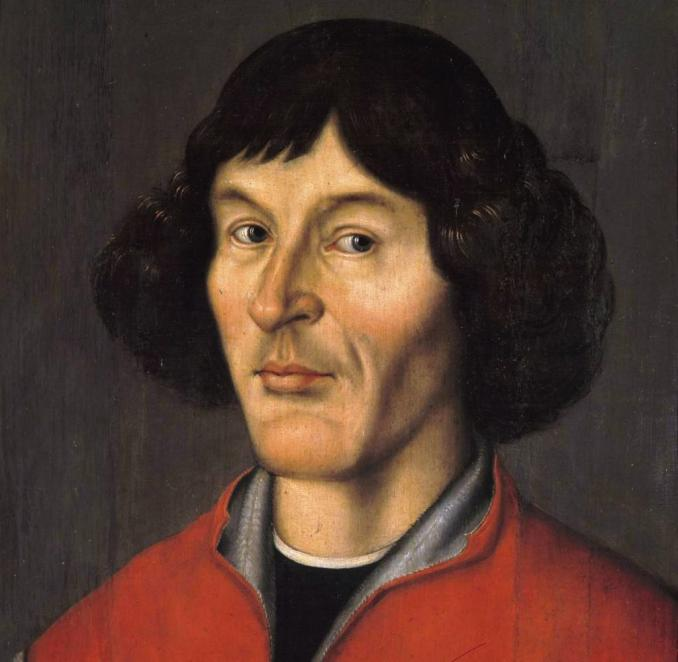

Mikołaj Kopernik
Mikołaj Kopernik był prawnikiem, urzędnikiem, dyplomatą, lekarzem, duchownym katolickim i doktorem prawa kanonicznego, zajmował się również astronomią i astrologią, matematyką, ekonomią, strategią wojskową, kartografią i filologią. Jak do tego wszystkiego doszło?
Biografia
Mikołaj urodził się w Toruniu 19 lutego 1473 r. Był najmłodszym z czworga dzieci toruńskiego kupca Mikołaja Kopernika. Miał 10 lat, gdy zmarł jego ojciec. Osieroconą rodziną zaopiekował się brat jego matki, Łukasz Watzenrode. Dzięki wujowi był doskonale wykształcony, ukończył akademię krakowską, skąd wyniósł umiłowanie do astronomii. Następnie studiował we Włoszech prawo i medycynę, a dodatkowo zajmował się matematyką i astronomią. Studia prawnicze rozpoczął w 1496 r. w Bolonii. W 1500 r. odbył praktykę prawniczą w kancelarii papieskiej w Rzymie. W 1501 r. podjął w Padwie studia medyczne. W 1503 r. uzyskał w Ferrarze dyplom doktora prawa kanonicznego. Jednocześnie ukończył studia medyczne w Padwie. W tym roku Mikołaj Kopernik opuścił Italię i przybył na Warmię (Gdzie biskupem był jego wuj). Dzięki staraniom Łukasza Watzenrode już w 1497 r. Kopernik został przyjęty do kapituły warmińskiej. Od 1507 r. został skierowany do Lidzbarku, a ilość obowiązków ograniczała jego działalność naukową. Prawdopodobny konflikt z wujem dotyczący niechęci Mikołaja do święceń kapłańskich i przejęcia po Watzenrodzie katedry spowodowała wyjazd Kopernika z Lidzbarka do Fromborka, a następnie do Olsztyna, gdzie pełnił funkcję administratora dóbr. Do jego obowiązków należało np. sporządzanie map i dokumentacji dotyczącej zagospodarowania terenów i ich zasiedlania. Mikołaj Kopernik przez większą część swojego życia leczył również biskupów warmińskich, członków kapituły i podległej im ludności.
Wróćmy jednak chwilowo do przeszłości i jego zainteresowania astronomią. Interesowała ona Kopernika w trakcie studiów w Krakowie, w późniejszych etapach edukacji docierał do dzieł starożytnych, i obserwował zaćmienie księżyca w 1500 r. We Fromborku, gdzie opisywał obserwacje nieba, powstała teoria heliocentryczna, będąca początkiem współczesnej astronomii. W 1514 r. Kopernik w dziele Mały komentarz opisał błędy teorii geocentrycznej i zaproponował zmianę na heliocentryzm. Jego poglądy początkowo znane wąskiemu gronu naukowców europejskich, dotarły również do ówczesnego papieża. Pierwsze wydanie dzieła O obrotach sfer niebieskich, zawierającego całą teorię Mikołaja Kopernika w 1543 r. spotkało się z burzliwymi reakcjami środowiska kościelno-naukowego. Publikację skrytykował m.in. Martin Luter, a Kościół Katolicki po soborze trydenckim uznał w niej zagrożenie dla biblijnej wizji świata i Ziemi za jego centrum. W późniejszym czasie wszystkie jego dzieła zostały wpisane do Indeksu Ksiąg Zakazanych, skąd usunięto je dopiero w 1758 r.
W grudniu 1542 r. astronom doznał udaru mózgu, w wyniku czego utracił mowę, a prawa strona jego ciała została sparaliżowana. W czasie choroby 21 marca 1543 została wydana książka astronoma i według legendy dotarła ona do Kopernika w ostatnim dniu jego życia. Astronom zmarł przed 21 maja 1543 we Fromborku. Swój bogaty księgozbiór przekazał w testamencie diecezji warmińskiej. Książki te wraz z archiwum biskupów warmińskich i księgozbiorem kapituły warmińskiej w 1626 r. trafiły w ręce Szwedów, którzy splądrowali bibliotekę przy katedrze we Fromborku. Z polecenia Gustawa II Adolfa zbiory te trafiły do biblioteki Uniwersytetu w Uppsali, która zdobyła najsłynniejsze na świecie kopernikana.
Heliocentryzm
Heliocentryzm to nieodłączna kwestia, jeśli chodzi o Mikołaja Kopernika, chociaż nie jest on samotnym twórcą tej teorii, to w głównej mierze dzięki niemu wiemy teraz, dlaczego mamy pory roku albo dlaczego jest noc. Na czym to polega? Słońce jest centrum wszechświata, a wszystkie je obiegają. Kopernik poparł tę teorię obliczeniami uzyskanymi dzięki obserwacji i zastosowaniu bardziej rozwiniętej matematyki. Jednak z teorią Kopernika był pewien problem, zakładał on, że planety poruszają się po okręgach, a w rzeczywistości jednak poruszają się po elipsie.
Dzieła
Ważne daty
- 19 II 1473 - Data narodzin.
- 1491–95 - Studia na akademii Krakowskiej
- 1495–1503 - Studia na uniwersytetach włoskich
- ok. 1515 - Opublikował pierwszy wykład teorii heliocentrycznej
- 1513–16 - Brał udział w pracach nad reformą kalendarza juliańskiego
- 1515–30 - Tworzył główne dzieło De revolutionibus orbium coelestium
- 1543 - Opublikował De revolutionibus orbium coelestium
- 24 V 1543 - Data śmierci
Ciekawostki
Dzięki przeprowadzonym badaniom na Uniwersytecie w Uppsali wiemy, jak prawdopodobnie wyglądał Kopernik. Odkryto to na podstawie DNA z włosa oraz czaszki znalezionej przy ołtarzu w katedrze we Fromborku. Strona internetową ze zdjęciami można znaleźć TUTAJ.
Grób Kopernika został odkryty w 2005 roku. Dlaczego nie odnaleziono go tak długo?